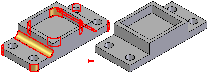

Delete Rounds command
To access the Simplify Model environment, when working on part or sheet metal part, choose Tools tab→Model group→Simplify Model.
To access the Flatten Model environment, when working in the Sheet Metal environment, choose Tools tab→Model group→Flatten Model.
Use the Delete Rounds command to delete rounds from the model. You can use this command to delete cylindrical and conical faces constructed with the feature commands in Solid Edge or on models you import from other applications.

You can use this command to define a simplified version of a model so that it processes faster when used in an assembly, or to make design modifications to a model.